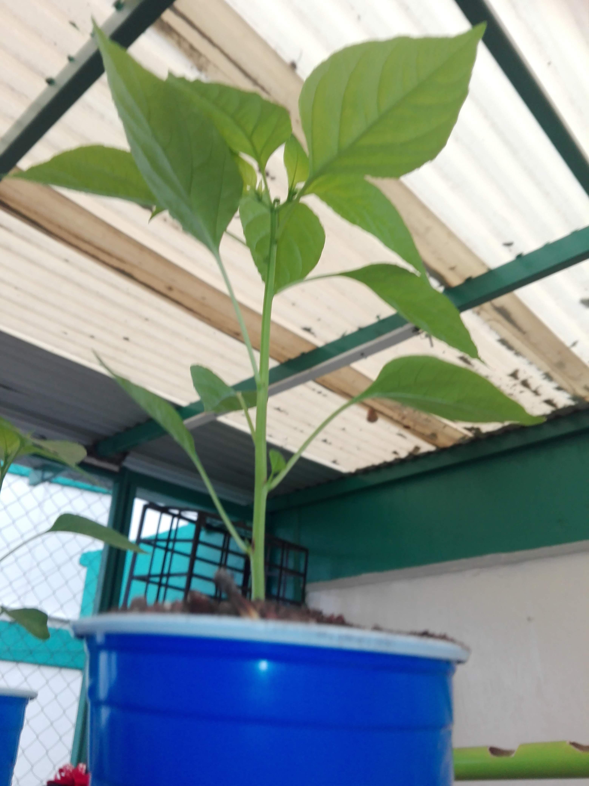
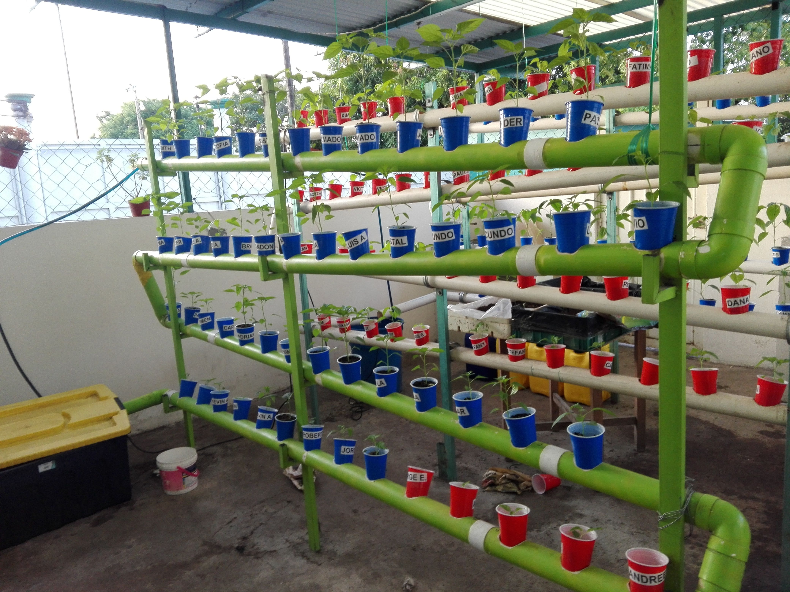
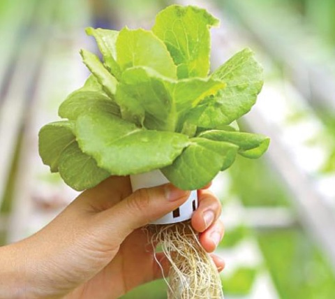

Fundamentos Científicos
La hidroponía representa una revolución en la biología vegetal. Al prescindir del suelo, nos enfocamos en la fisiología de la planta: cómo respira a través de sus raíces y cómo sintetiza nutrientes. Este método permite estudiar el ciclo de vida de las plantas de manera controlada.


Nutrición y Química
Aquí aplicamos la química básica para crear "agua viva". La nutrición hidropónica se basa en el balance de macro y micronutrientes, controlando siempre el nivel de pH para una absorción óptima.


Sustratos y Soporte
El sustrato en hidroponía cumple la función física que normalmente hace la tierra: sostener la planta y retener oxígeno. Usamos materiales inertes que garantizan que el sistema sea limpio.


Conexión con mis Materias
Matemáticas
Cálculo de dosis de nutrientes y gráficas de crecimiento.
Español
Redacción de informes y capacidad de exposición oral.
Formación Cívica y Ética
Responsabilidad ciudadana y cuidado del medio ambiente.
Tecnología
Diseño del sistema y programación de esta plataforma web.


La hidroponía ahorra un 90% de agua, evita la erosión del suelo y permite cultivar en ciudades, reduciendo la contaminación por transporte de alimentos.